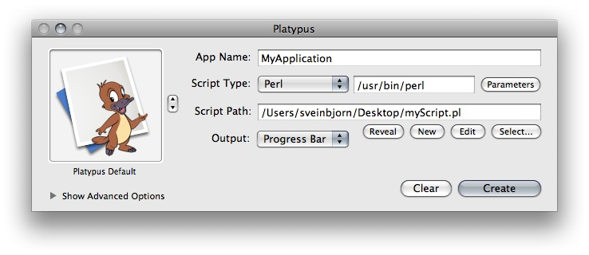
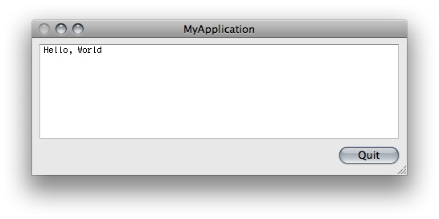
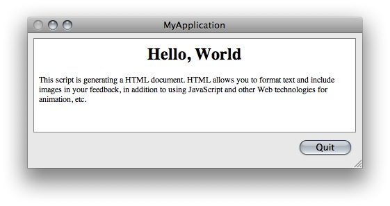
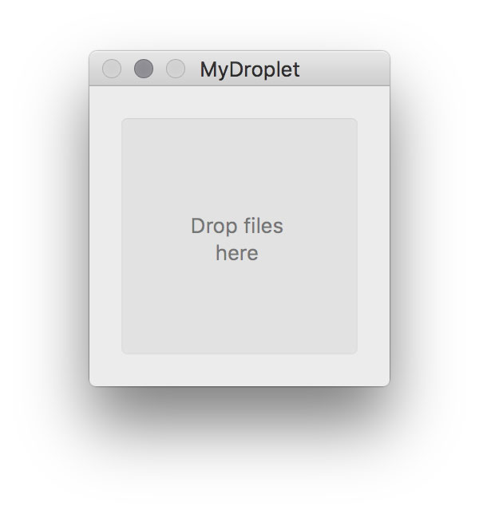
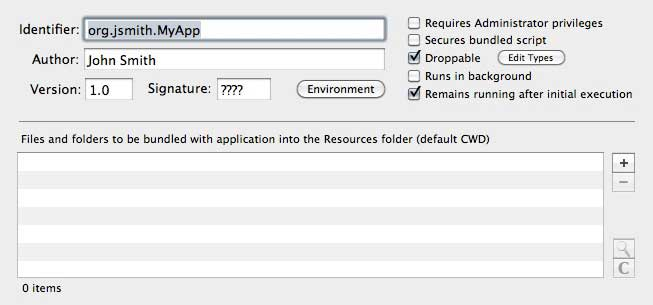
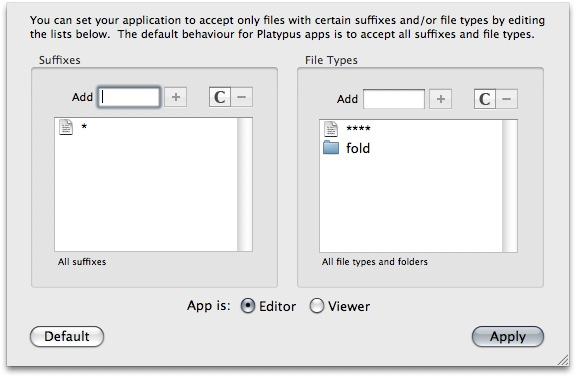
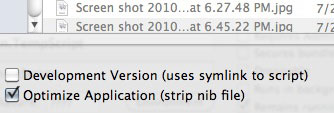
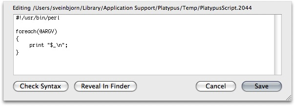

Platypus Documentation
For version 4.5.
Last updated August 20, 2010, by Sveinbjorn Thordarson
Index
- Introduction
- The Basics
- Advanced Options
- More Advanced Options
- Preferences
- Profiles
- Examples
Introduction
About Platypus
Platypus is a Mac OS X developer tool which allows you to create application wrappers around scripts. This means that your scripts can be launched from the Mac OS X graphical user interface -- e.g. the Finder or the Dock -- without requiring the script's end-user to use the UNIX command line interface. Your scripts effectively become regular Mac OS X applications.
Platypus was first conceived in 2003 and implemented using the Carbon APIs. It has since gone through over a dozen major updates, and is now entirely written in Objective-C for the Cocoa APIs.
Platypus is free, open-source software distributed under the terms and conditions of the Free Software Foundation's GNU General Public License. This means the source code is freely available and you are free to modify and distribute it as you see fit, as long as it remains open. Platypus-generated applications, however, are not bound by this license, which means that you are free to make use of Platypus in creating commercial, closed-source products.
While Platypus is free, it is the product of hundreds of hours of work over the span of several years. If you find Platypus a useful application, I ask that you please consider making a donation to support further development. I rely on donations to encourage me in adding features and making Platypus a stable and efficient application. I am generally also willing to add requested features in exchange for payment.
That being said, while I am happy to respond to feature requests, bug reports and questions concerning Platypus which are not addressed in this document, I will not respond to queries about scripting and scripting languages. Productive use of Platypus assumes that you are competent in your scripting language of choice. I am obliged to note this due to the large number of queries I have received through the years about scripting languages and their use. I simply do not have the time or inclination to respond to such queries -- there is a plethora of good tutorials for most scripting languages freely available online.
Credits
Platypus was conceived and created, and is currently maintained and developed by me, Sveinbjorn Thordarson <sveinbjornt@simnet.is>
The Platypus icon -- Hexley, the Darwin mascot -- was created by Jon Hooper, who was kind enough to grant me permission to use it as the Platypus application icon. Derivative icons using Hexley were created by Sveinbjorn Thordarson.
Additional thanks go to Troy Stephens, author of the IconFamily class used for icon handling in Platypus, Uli Kusterer author of UKKQueue, Gianni Ceccarelli for contributing code on authenticated script execution, Matt Gallagher for secure temp file code, and the Adium developers for various code bits. The OmniGroup Mac OS X Development mailing list has also been invaluable.
Finally, I am much indebted to Wilfredo Sanchez, author of DropScript, the proof-of-concept project that inspired me to create Platypus in the first place.
How does it work?
Regular Mac OS X applications are bundles -- special folders with a directory structure within which a binary is stored, along with resources, configuration files and property lists. Platypus creates applications with a special binary that launches a specified script and captures its output. It can present this output in a number of ways.
What Platypus is NOT
Platypus is not a set of bindings between the Mac OS X APIs and scripting languages. It is not, in other words, a full development environment for Mac OS X and is not intended to be used to create substantial Mac OS X applications with sophisticated user interaction. If you wish to write serious and sophisticated Mac OS X applications, you should learn to program with Objective C and the wonderful Cocoa APIs. Platypus is NOT and never will be a substitute for learning to use the native application interfaces.
The Basics
Basic Interface
The basic Platypus interface is pretty straightforward. As soon as you launch the Platypus application, you will see a window like this:
Open your favorite text editor, write the script you want to create an application from and save it. Then find your script in the Finder and drag it on the Platypus window, or, alternately, press the "Select.." button and locate it via navigation dialog. Now it's time to configure the application. The basic interface allows you to set the following things:
App NameHere you type in the name of the application you are about to create. Once you press the "Create" button, you will be prompted again for a name for your app. However, that will only be the name of the actual application bundle directory, so make sure you put in the proper application name here.
Script PathThis field contains the path to the script you will create the app from. You either define this manually by typing the path into the text field (which supports shell-style autocomplete), or by pressing the "Select" button and selecting it in a navigation dialog or by dragging your script on to the Platypus window. Once you have selected a valid script, you can press the "Edit" button to open it in your default text editor. Platypus includes a very basic built-in text editor as the default editor. You can change this in the Preferences to use any external editor you want.
You can also press the "New" button. This will create a text file for you in Platypus' Application Support folder and open it in your default editor. The "Reveal" button reveals the script file in the Finder.
Interpreter
Script TypeDepending on the scripting language you use, you will want to select the appropriate kind here. You can either select one of the predefined scripting languages from the the pop-up menu or type in the path to an interpreter of your own choice in the field next to the pop-up menu. When you select a script file, Platypus will automatically try to determine what kind of script it is by looking at the file suffix and shebang (#!) line. Please note that the interpreter you selected must exist on the Mac OS X system on which your script application will run. All the preset scripting language interpreters (e.g. Shell, Perl, Python, PHP, Tcl, Expect etc.) are a standard part of all Mac OS X installations.
The "Parameters" button next to the text field containing your script intepreter setting allows you to specify arguments for the script interpreter.
Output Types
The Output pop-up button allows you to select what the application you create will do with the output of the Script. There are four settings available:
None: Your application will provide no graphical feedback whatsoever. The application will just launch in the Dock and execute the script without opening any windows. All script output will go to STDOUT and STDERR.
Progress Bar: A small window with an indeterminate progress bar and a "Cancel" button will appear during the execution of the script. Script output is fed line by line into the status message above the progress bar. A small arrow to with a "Show details" option will reveal a small text field containing all script output.
It is worth noting that the script can communicate with the progress bar and notify it of script progress. All lines of script output with the format 'PROGRESS:\d+' (e.g. PROGRESS:75) will be interpreted as setting the completion percentage of the task.

Text Window:A window with a text field will be displayed. This text field receives all script output. Please note that this text field is not an interactive terminal session, and cannot receive any input from the user. It does not support any terminal buffering or commands and cannot be used to display ncurses-based interfaces. It just displays the actual text output of the script as it is being executed. The properties of the text field can be modified in Platypus by pressing the "Text Settings" button. This will present an interface pane in which text encoding, font, color and size can be set.
Web: Web output means that the output from your script will be interpreted as HTML and passed on to a WebView in the output window -- i.e. an instance of the WebKit rendering engine used in Safari. This allows you to use HTML formatting and web technologies/markup to provide feedback on script execution. It is worth noting that there have been problems reported with this feature on Mac OS X systems prior to version 10.4.7.
Status Menu: Status Menu output is slightly different from the other output modes. Your Platypus-generated application will create a Status Item in the menu bar. Every time the status item is clicked, your script will be executed and the text output displayed line for line as menu items.
It is worth noting that another application I created called Tapir allows for more sophisticated development of Status Items that display script output.

Droplet: Creates a square window instructing the user to drop files on it for processing. While processing, script output will be displayed line for line within the box along with an indeterminate circular progress indicator.
Setting the Icon
Platypus allows you to set an icon for your application. You can loop through the Platypus icon presets for your application or, alternately, drag an image or icon file for a custom icon. There are also two menu items in the "Advanced" menu, "Select Custom Icon..." and "Import Custom Icon...", which allow you to select either an image to use as icon, or specify a file whose icon is to be used. The app icon box has a contextual menu which gives easy access to these functions, allowing you to paste an icon from the clipboard. It is also worth mentioning that you can choose the option "Select .icns file", to bypass Platypus' processing of images and copy a given .icns file directly to the application bundle.
Please note that having Platypus create the icon file will not result in an icon that looks good in smaller sizes. For best results, use professional Mac OS X icon-editing software and specify a carefully crafted .icns file with the "Select .icns file" option.
Advanced Options
Advanced Platypus options are revealed by pressing the "Show Advanced Options" triangle in the bottom-left corner of the Platypus window. This will reveal the following controls:
Author and Version
The Author and Version fields allow you to specify just that: the name of the author of your script application and its version. This will default to the full name associated with your user account, and version 1.0. This information will appear in the "Get Info" window for your application in the Finder, and in the window that appears when users selected "About this application" in the Application menu of the app.
Identifier and Signature
The Identifier text field allows you to set the unique identifier for your application. If you have typed in a name for your application, the "Identifier" text field will contain something like "org.username.YourAppName". Every Mac OS X application has a unique string called a bundle udentifier -- a reverse DNS name (i.e. "com.apple.iTunes"). Platypus automatically formats the bundle identifier using the application name and default user name, but you can set it to something else if you so wish.
Special Options
The checkboxes to the right allow you to set all sorts of properties of your application:
Requires Administrator privileges: Checking "Requires Administrator privileges" will cause your application to prompt for an Administrator password and then execute your script with administrative privileges via Apple's Security Framework. This is not strictly equivalent to running the script as the root user. For details, see the documentation for Apple's Security Framework.
Please note that Platypus scripts must not use the 'sudo' command. This will cause the script to prompt for input, and since none will be forthcoming, your application will hang indefinitely. If you wish to execute a command with privileges, you must execute the script in its entirety with those privileges by checking "Requires Administrator Privileges".
Please note that if this option is selected, the script will not print STDERR output due to limitations in the Security APIs. This can be circumvented by using a shell script to execute another script while piping STDERR into STDOUT (e.g. perl myScript.pl 2>&1).
Secure bundled script: Checking this option will bundle your script into the generated application in a simple, encrypted format instead of plain text. Please note that this will not stop a determined hacker from getting a clear-text version of your script. In order for your script to be executed, it must be presented in clear text to the interpreter, and can thus never be truly safe from prying eyes. However, this may serve to dissuade a less determined tinkerer.
Droppable: Makes your application into a droplet that can receive drag and dropped files. These files are then passed on to the script as arguments. If this option is checked, a small button called "Edit Types" appears. This allows you to specify what kind of files your script application accepts. This is discussed in greater detail later in this document.
Runs in background: If you select this, your application will register itself as a User Interface Element. When the app is launched, it will not show up in the Dock.
Remain running after completion: This option will cause your application to stay open once the script has been executed.
Bundled Files
You can add a list of files to be copied into the Resources folder of your application bundle. These files can then be used by your script. The default current working directory of your script will be this folder, so you should be able to access them directly. In some cases, you maye need to manually change to the Resources directory. If so, press the "Parameters" button and set check the "Set $1 as path to app" checkbox. Your bundled files will then be accessible via the following path "$1/Contents/Resources/[filename]".
More Advanced Options
Editing File Types and Suffixes
If you set your script application to be droppable (i.e. accept dropped files as arguments), you may wish to restrict what sort of files the user can legitimately drop on your app. To edit the file types and suffixes your application accepts, you have to check the "Droppable" checkbox and then press the small "Edit Types" button which will appear. This should display the following window:
The default behaviour is to accept all suffixes, all file types and folders. You can edit those two lists to suit your needs. If you want your application to accept dropped folders, you should add the File Type 'fold'. You can also set whether your application is an Editor or a Viewer for files. This is not really important, but it is one of many pieces of information the Finder stores about application bundles. At present it is not possible to set customised icons for these different file types, as regular applications do, but this is a planned feature for future versions.
Development Versions
Platypus allows you to create development versions of your script application. Usually, Platypus will copy your script into the application it creates. If this option is selected in the "Create app" dialog, a symlink to the original script is created instead. This allows you to work on your script while testing it as a Platypus-app. For obvious reasons, this option is not compatible with the "Secures bundled script" option.
Another option, Optimize Application, will strip and compile the nib file in the generated application in order to reduce its size. This will result in the application's nib being uneditable. This option is only available if you have Apple's Developer Tools installed.
Built-In Editor
Platypus includes a very basic built-in text editor which is displayed if you press the Edit button next to the script path text field.
Platypus defaults to using the built-in editor, but you can easily change this in the Preferences.
Syntax Checking
The Check Script Syntax menu item in the File menu allows you to verify the syntax of your script. This option will run the currently specified script through its interpreter's syntax checking mechanism and report the result in a sheet window.
Please note that syntax checking is only supported for those script types where the interpreter supports it. As of writing, this includes shell, Perl, Ruby and PHP scripts -- and, through some additional magic, Python scripts. The syntax checking commands issued for each interpreter are the following:
Shell: /bin/sh -n "/path/to/script"
Perl: /usr/bin/perl -c "/path/to/script"
Ruby: /usr/bin/ruby -c "/path/to/script"
PHP: /usr/bin/php -l "/path/to/script"
Python: Platypus.app/Contents/Resources/pycheck.py "/path/to/script"
Show Shell Command
Platypus includes a command line tool equivalent to the Platypus.app application, which can be installed into /usr/local/bin/platypus via the Preferences. The man page for this tool is available from the Help menu. Furthermore, under the Advanced menu there is a menu command called Show Shell Command. Selecting this item will bring down a sheet with a text field containing a command line command for executing the platypus command line with the options you selected in the graphical interface. This can be helpful if you have the command line tool installed and wish to automate the creation of script apps. Note that Platypus.app is not merely a GUI frontend for the command line tool and, depending on the current state of Platypus development, the command line tool may not have feature parity with the GUI app.
Run in Terminal
The File menu has a Run in Terminal command which runs your script in the Terminal. This allows you to test your script in the shell before creating an application from it.
Preferences
The Platypus Preferences should be pretty self-explanatory. You can select an editor of choice, set the default author and bundle identifier settings, text encoding, and install/uninstall the platypus command line tool.
Profiles
Saving and Loading
Profiles allow you to save Platypus application configuration settings. These can be loaded by the Platypus application or the platypus command line tool. The Profiles menu is used to save and access profiles. Profiles are stored as files, typically in the Profiles folder of the Platypus Application Support folder. You can load a profile by selecting it from the menu, which lists all profiles in the Profiles folder. To reveal a profile in the Finder, hold down the Command key and select the profile. Profiles have a .platypus
filename suffix. Please note that profiles may or may not work between different versions of Platypus, depending on the extent of change between versions.
Using Profiles with the Command Line Tool
Profiles can be used with the platypus command line tool. This allows you to set all the settings for your application within the graphical user interface, save them as a profile and load them with the command line app. This makes automation more convenient. The following command would load a profile with the command line tool and create an app from it named MyApp.app:
/usr/local/bin/platypus -P myProfile.platypus MyApp.app
See the command line tool man page for further details. A PDF version of this man page is available through the Platypus Help menu.
Platypus Profile Format
The Platypus Profile file format is a Mac OS X property list. It can be edited using the Property List Editor application that comes with the Mac OS X developer tools. Of course, the easiest way to edit and generate profiles is using either the Platypus graphical application or command line program.
Examples
The following examples may be useful in understanding how Platypus works. I haven't had the patience to write up new ones, so these may be somewhat dated given the current status of Platypus.
Creating a droplet with files as arguments
Droplets are one of the more interesting uses of Platypus, because they make it easy to create a graphical app for batch-processing many files using a scripting language. The following example shows out to create an application which gzip-compresses all dropped files.
Once you have selected your script and defined an Application name, click "Show advanced options" and check the "Droppable" checkbox.
The files dropped on to your applications from the graphical user interface will now be passed on to your script via the ARGV array. Below you'll see a sample Perl script that compresses the files it receives as argument using the gzip program:
#!/usr/bin/perl
# loop through list of files dropped
foreach(@ARGV)
{
# gzip each file in turn
system("gzip '$_'");
}
Of course, this little script just barely scratches the surface of what is possible. The potential is considerable -- you can operate on the dropped files using all manner of command-line tools and programs, making dreary CLI commands as easy as dropping files on an app.
Creating an installer
This short tutorial will demonstrate the process of creating a GUI installer using a shell script and Platypus.
Step 1: Set Output Type and ParametersOnce you have defined the name of your installer in the "App Name" field, you'll probably want to set Output as "Progress Bar" to indicate to the end user that some activity is taking place. Another option is "Text Window", in which case you should set your script to print out status messages on how the installation is doing into a text window while it is running. The install may take some time, depending on what you're installing.
Also, make sure to click the "Parameters" button and check the "Set $1 as path to app" option. This is important in order to access the files we will be bundling with our app.
Step 2: Set Installer IconSince you're making an installer, you may want to set the icon of the application to "Platypus Installer", or alternately, set your own custom icon by choosing "Select Custom Icon" from the "Advanced" menu.
Step 3: Set Advanced Options / Admin PrivilegesIf your installer needs to install files in protected locations on the file system (i.e. in places where your end user will typically not have write-privileges), you'll need to click "Show advanced options" and check the "Requires Adminstrator privileges" checkbox. This will make the app execute your script with administrator privileges after prompting the user for the administrator password.
Step 4: Select the files to be installedWe now want to add the files that our installer will actually install. We add files to the file list under "Advanced Options" by pressing the "+" button to the right until we have specified all the files we want.
These files will be copied into the Resources folder of the application we're about to create.
Step 5: Create the scriptNow it's time to create the script that will actually do the installing. Let us imagine that we've added two files: MyApp.app and MyFramework.framework to the bundled files list. To install these two, we would use the following script:
#!/bin/sh echo "Installing MyApp.app in /Applications" cp -R "MyApp.app" "/Applications/" echo "Installing MyFramework.framework in /Library/Frameworks" cp -R "MyFramework.framework" "/Library/Frameworks/"
The echo messages are optional, but may be helpful if you've set your output type to "Text Window": then your user will see these messages. You may want to modify permissions using chmod or do extra things like open the application (a simple "open /Applications/MyApp.app").
With a script such as this and the above-mentioned settings we are ready to go -- press the Create button and you'll have a fully-functioning installer.
User interaction with CocoaDialog
It is possible to use Platypus with an ingenious open-source application called CocoaDialog to construct scripts that prompt for input and generate feedback. CocoaDialog is documented adequately elsewhere so I will not discuss it. Instead I will briefly outline how to combine it with Platypus to create a Mac OS X application with a user interface.
First you need to download CocoaDialog. You can then open Platypus and add it to the list of bundled files.
Below you can see a shell script that gives an example of how to query for input with a bundled copy of CocoaDialog:
#!/bin/bash CD="CocoaDialog.app/Contents/MacOS/CocoaDialog" rv=`$CD yesno-msgbox --string-output` $CD ok-msgbox --no-cancel --text "You pressed $rv"
This Platypus application will present the user with an alert and several buttons. When the user presses one of the buttons, a feedback dialog is generated notifying the user which button he pressed. While this particular script accomplishes nothing, it serves as an example of how easy it can be to add interactive elements to your script by combining Platypus with CocoaDialog.
Copyright © 2003-2010 Sveinbjorn Thordarson